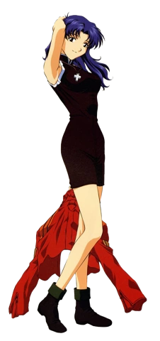

Misato Katsuragi (葛城 ミサト, Katsuragi Misato) es una de los personajes principales de la serie de anime Neon Genesis Evangelion.
Ella está al mando de las operaciones tácticas en la organización NERV, siendo responsable de coordinar las Unidades Evangelion en combate contra los Ángeles, ocupando el cargo de capitán. Más tarde es ascendida al rango de mayor.
Tutora de Shinji Ikari y Asuka Langley Soryu.
Es la hija del Dr.Katsuragi y fue la unica sobreviviente del segundo impacto.
Es una mujer atractiva y carismática, pero también es una persona solitaria y atormentada por su pasado.
Es una de las pocas personas que conoce la verdad sobre los Ángeles y los Evangelions.